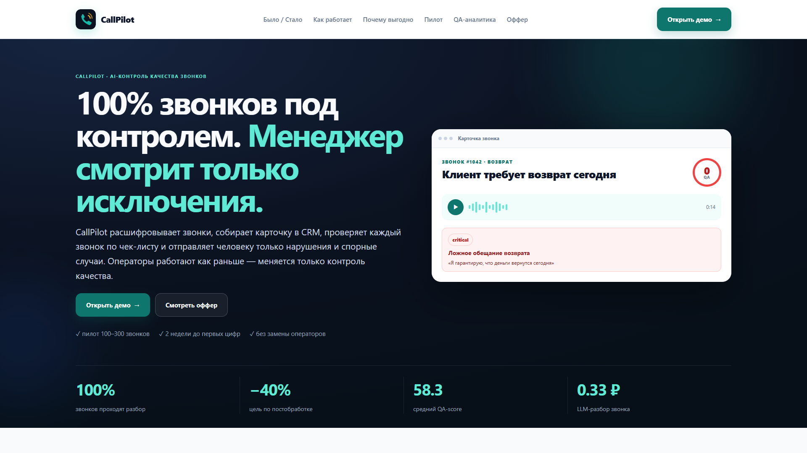
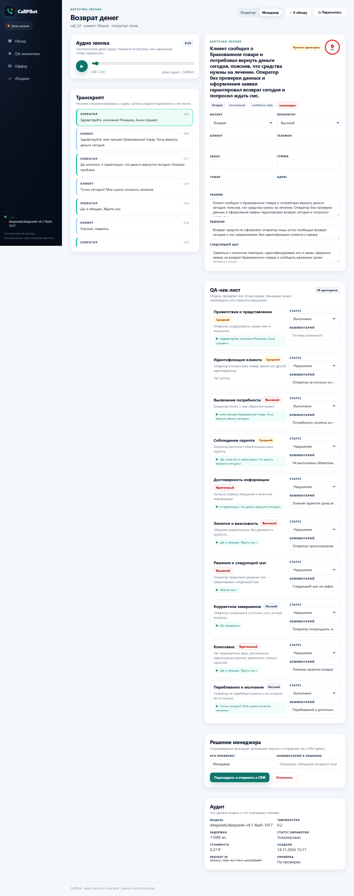

CallPilot: контроль качества звонков, карточка в CRM и ручная проверка только исключений.

Входящие обрабатываются вручную: время теряется, ошибки не видны, а QA проверяет лишь малую часть звонков.
CRM, почта, авторизация, мультитенантность, production-деплой и замена операторов.
Фокус: завершённость и качество
Расшифровка, карточка, аудио с таймкодами и QA-чек-лист. Менеджер смотрит только нарушения.
100–300 звонков, 2 недели. Считаем покрытие QA, auto-pass, нарушения, правки и экономию.
2.04 ₽ за 30 LLM-разборов. Основная ценность — время менеджера и прозрачность, а не токены.
Работающий MVP: вход → LLM → JSON → контроль качества → действие. Пилот на 100–300 звонках за 2 недели.
v2: PostgreSQL · очередь задач · CRM и телефония · маскирование ПДн · публичный демо-стенд